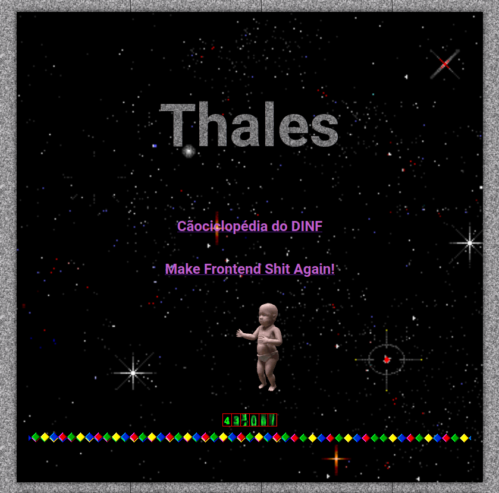

O site do Thales é TÃO LEGAL! (completamente desproporcional ao dono). Ele representa muito bem o que um site deveria almejar a ser: caos e diversão.
Pertencente ao movimento Make Frontend shit Again , ele tem gifs mezozóicos, texto animado, blinkies mas não deixa de cumprir sua função como currículo.

Sua mais nova seção, a Cãociclopédia do DINF faz uma coletânea dos professores e seus gêmeos cachorros, honestamente hilário.
Como não sabemos se algum professor vai pedir pra retirar essa obra de arte do ar, se alguém quiser ver, acesse o site!